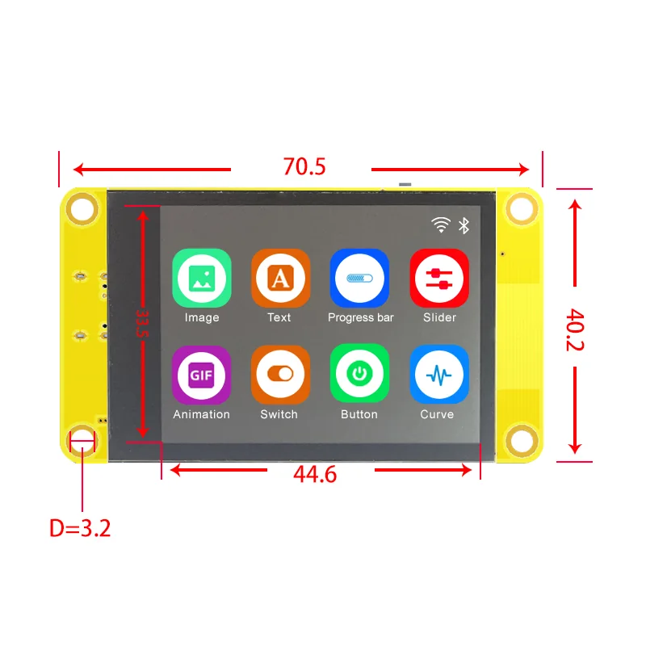

ESP32-2432S022
Guition
ESP32-2432S022 is a 2.2" ESP32 display board by Guition.
Specifications
| Parameter | Value | Source |
|---|---|---|
| Screen size | 2.2" | source |
| Category | File server only | |
| Vendor | Guition |
Official links & documentation
Files
Offline copies are available on the interactive page.
- 2.2inch_ESP32-2432S022.zip – original
Notes
- Not listed on guition.com (model list / product pages); this entry exists because the archive is on the official file server. Parameters only from the file name and the archive contents.